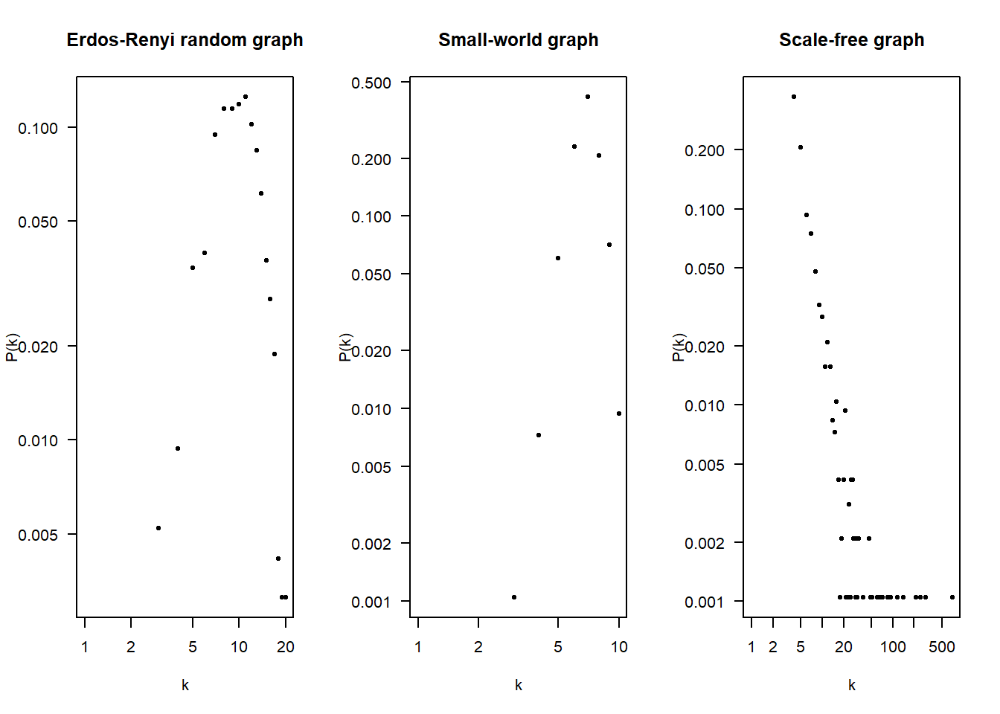
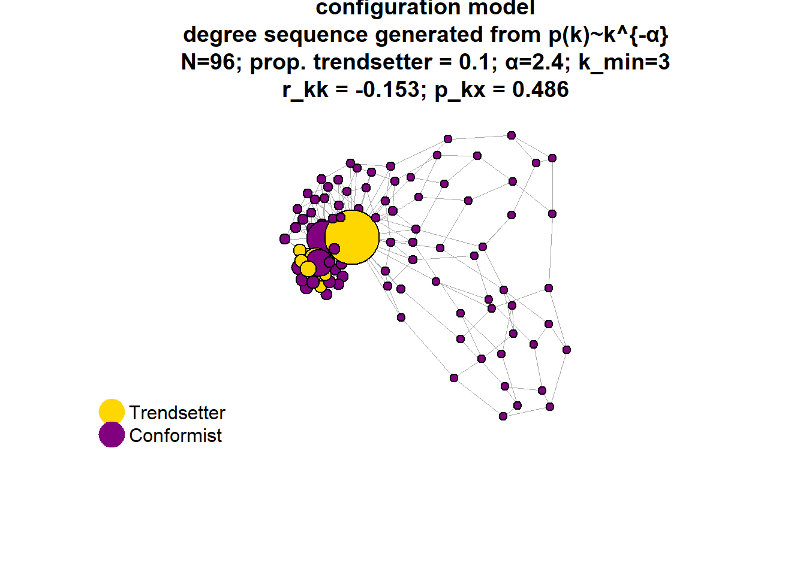
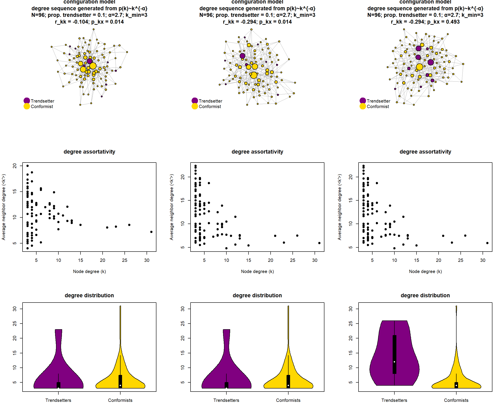

ABM
Last compiled on 29-11-2024
rm(list = ls())
gc()fpackage.check <- function(packages) {
lapply(packages, FUN = function(x) {
if (!require(x, character.only = TRUE)) {
install.packages(x, dependencies = TRUE)
library(x, character.only = TRUE)
}
})
}
fshowdf <- function(x, ...) {
knitr::kable(x, digits = 2, "html", ...) %>%
kableExtra::kable_styling(bootstrap_options = c("striped", "hover")) %>%
kableExtra::scroll_box(width = "100%", height = "300px")
}
fsave <- function(x, location = "./data/processed/") {
if (location == "./data/processed/") {
ifelse(!dir.exists("data"), dir.create("data"), FALSE)
ifelse(!dir.exists("data/processed"), dir.create("data/processed"), FALSE)
}
object = deparse(substitute(x))
datename <- substr(gsub("[:-]", "", Sys.time()), 1, 8)
totalname <- paste(location, object, "_", datename, ".rda", sep = "")
assign(eval(object), x, envir = .GlobalEnv)
print(paste("SAVED: ", totalname, sep = ""))
save(list = object, file = totalname)
}
packages = c("tidyverse", "igraph", "grid", "cowplot", "purrr")
fpackage.check(packages)
rm(packages)
# library(furrr) library(future) library(parallel)1 utility function
futility <- function(agent_id, choice, agents, network, params) {
# get ego and his local neighborhood
ego <- agents[agent_id, ]
neighbors <- neighbors(network, ego$id)
alters <- agents[as.numeric(neighbors), ]
n <- nrow(alters)
# count number of neighbors who did (not) follow the trend
n1 <- sum(alters$choice == 1)
n0 <- sum(alters$choice == 0)
# calculate expected utility (depending on alters' choices in prior round)
if(ego$role == "conformist") {
choice_payoff <- ifelse(choice == 0, params$s, 0)
coordination_payoff <- ifelse(choice == 0, # normalized by n
(params$w/n) * n0,
(params$z/n) * n1)
} else {
choice_payoff <- ifelse(choice == 1, params$e, 0)
coordination_payoff <- 0
}
return(list(utility = choice_payoff + coordination_payoff,
n1 = n1, n0 = n0))
}2 plot network graph
#visualize the network topology and agent positions (degree-trait correlation)
fplot_graph <- function(graph, main=NULL, layout_algo=NULL,
col1 = "#FFD700", col2 = "#800080") {
plot(graph,
main = main,
layout = layout_algo,
vertex.label = NA,
vertex.size = degree(graph) * 0.6 + 4, # node size based on degree
vertex.color = ifelse(V(graph)$role == "trendsetter", col1, col2),
edge.width = 0.5,
edge.color = "darkgrey")
#add legend
legend("bottomleft",
legend = c("Trendsetter", "Conformist"),
pch = 21,
col = c(col1,col2),
pt.bg = c(col1,col2),
pt.cex = 3,
bty = "n")
}3 preferential attachment model
# scale-free network using preferential attachment algorithm
n = 96
m = 3
alpha = 1.5
t = 0.1
network <- sample_pa(n = n, m = m, power = alpha, directed = FALSE)
V(network)$role <- sample(c(rep("trendsetter", floor(n * t)), rep("conformist", n - floor(n * t))))
sort(degree(network))#> [1] 3 3 3 3 3 3 3 3 3 3 3 3 3 3 3 3 3 3 3 3 3 3 3 3 3 3 3 3 3 3 3 3
#> [33] 3 3 3 3 3 3 3 3 3 3 4 4 4 4 4 4 4 4 4 4 4 4 4 4 4 4 4 4 4 4 4 5
#> [65] 5 5 5 5 5 5 5 6 6 6 6 6 6 7 8 8 8 9 9 10 10 10 10 11 11 12 13 24 26 26 29 37fplot_graph(network)
4 configuration model
# generate random graphs based on a degree sequence generated by a power law distribution
fdegseq <- function(n, alpha, k_min = 1, k_max = n - 1) {
# sample degree sequence
degseq <- sample(k_min:k_max, size = n, replace = TRUE, prob = (1/(k_min:k_max))^alpha)
# correct the degree sequence if its sum is odd (necessary for the configuration model)
if (sum(degseq)%%2 != 0) {
degseq[1] <- degseq[1] + 1
}
return(degseq)
}
degseq <- fdegseq(n = 96, alpha = 3.1, k_min = 3)
network <- sample_degseq(degseq, method = "vl")
is_simple(network)#> [1] TRUEsort(degree(network))#> [1] 3 3 3 3 3 3 3 3 3 3 3 3 3 3 3 3 3 3 3 3 3 3 3 3 3 3 3 3 3 3 3 3
#> [33] 3 3 3 3 3 3 3 3 3 3 3 4 4 4 4 4 4 4 4 4 4 4 4 4 4 4 4 4 5 5 5 5
#> [65] 5 5 5 5 5 5 5 5 5 5 6 6 6 6 6 6 7 7 7 7 7 7 7 8 8 9 10 10 11 13 17 32# randomly assign roles, based on proportion trendsetters
V(network)$role <- sample(c(rep("trendsetter", floor(n * t)), rep("conformist", n - floor(n * t))))
# visualize graph
fplot_graph(network)
# alpha 2.1 creates average degree of ~ 8.5 alpha 2.4 creates average degree of ~ 6.9 alpha 3.1
# creates average degree of ~ 4.8 @RF: loop over high number of simulated configuration models to
# get an accurate average <k>
# to produce random networks with same average degree; tweak edge probability <k> = p * (n-1); with
# p being edge probability p = <k> / (n-1) 8.5 / 95 ~ 0.09 6.9 / 95 ~ 0.07 4.8 / 95 ~ 0.055 rewiring to manipulate degree-assortativity
# rewiring function to adjust assortativity (r) to desired level; Newman:
frewire_r <- function(network, target_r, max_iter = 1e+05, tol = 0.01, verbose = TRUE) {
current_r <- assortativity_degree(network)
iteration <- 1
if (verbose) {
cat("Target assortativity coefficient:", target_r, "\n")
cat("Starting assortativity coefficient:", current_r, "\n")
cat("Tolerance:", tol, "\n")
}
while (abs(current_r - target_r) > tol && iteration < max_iter) {
# get network edges
edges <- E(network)
# to edgelist
edge_list <- ends(network, edges)
# randomly select two pairs of connected nodes
idx1 <- sample(1:nrow(edge_list), 1)
idx2 <- sample(1:nrow(edge_list), 1)
# extract node indices
u1 <- edge_list[idx1, 1] # node 1 of first edge
v1 <- edge_list[idx1, 2] # node 2 of first edge
u2 <- edge_list[idx2, 1] # etc
v2 <- edge_list[idx2, 2]
# check if the two pairs of connected nodes (u1, v1; u2, v2) are disjoint
if (length(unique(c(u1, v1, u2, v2))) == 4) {
# check if there is already an edge across the node-pairs ensure no loops and no
# duplicate edges
if (!are_adjacent(network, u1, u2) && !are_adjacent(network, v1, v2) && u1 != v2 && u2 !=
v1) {
# perform the edge swap (u1,v1) <-> (u2,v2) becomes (u1,v2) <-> (u2,v1)
new_network <- network # Copy network
# check if the new edges already exist to avoid duplicates
if (!are_adjacent(new_network, u1, v2) && !are_adjacent(new_network, u2, v1)) {
# add edges
new_network <- add_edges(new_network, c(u1, v2, u2, v1))
# remove edges
new_network <- delete_edges(new_network, get.edge.ids(new_network, c(u1, v1, u2, v2)))
# new assortativity
new_r <- assortativity_degree(new_network)
# accept tie swap if it brings us closer to the target assortativity
if (abs(new_r - target_r) < abs(current_r - target_r)) {
current_r <- new_r
network <- new_network
if (verbose) {
cat("Rewiring at iteration", iteration, "brought assortativity closer to target! Current assortativity coefficient:",
new_r, "\n")
}
}
}
}
}
iteration <- iteration + 1
}
if (verbose) {
cat("Final assortativity coefficient:", current_r, "\n")
if (abs(current_r - target_r) <= tol) {
cat("Target reached within tolerance.\n")
} else {
cat("Reached maximum iterations without meeting target.\n")
}
}
return(network)
}
# initialize scale-free network
degseq <- fdegseq(n = 96, alpha = 2.4, k_min = 3)
network <- sample_degseq(degseq, method = "vl")
V(network)$role <- sample(c(rep("trendsetter", floor(n * t)), rep("conformist", n - floor(n * t))))
# get current assortativity coefficient
assortativity_degree(network)#> [1] -0.2359417# set target
target = -0.1
network2 <- frewire_r(network, target_r = target, max_iter = 1000)#> Target assortativity coefficient: -0.1
#> Starting assortativity coefficient: -0.2359417
#> Tolerance: 0.01
#> Rewiring at iteration 5 brought assortativity closer to target! Current assortativity coefficient: -0.2359188
#> Rewiring at iteration 23 brought assortativity closer to target! Current assortativity coefficient: -0.2358501
#> Rewiring at iteration 25 brought assortativity closer to target! Current assortativity coefficient: -0.2355065
#> Rewiring at iteration 30 brought assortativity closer to target! Current assortativity coefficient: -0.2352775
#> Rewiring at iteration 34 brought assortativity closer to target! Current assortativity coefficient: -0.233388
#> Rewiring at iteration 35 brought assortativity closer to target! Current assortativity coefficient: -0.232678
#> Rewiring at iteration 39 brought assortativity closer to target! Current assortativity coefficient: -0.2322657
#> Rewiring at iteration 43 brought assortativity closer to target! Current assortativity coefficient: -0.2321512
#> Rewiring at iteration 50 brought assortativity closer to target! Current assortativity coefficient: -0.231968
#> Rewiring at iteration 52 brought assortativity closer to target! Current assortativity coefficient: -0.2317847
#> Rewiring at iteration 66 brought assortativity closer to target! Current assortativity coefficient: -0.2316473
#> Rewiring at iteration 79 brought assortativity closer to target! Current assortativity coefficient: -0.2309602
#> Rewiring at iteration 106 brought assortativity closer to target! Current assortativity coefficient: -0.2308686
#> Rewiring at iteration 112 brought assortativity closer to target! Current assortativity coefficient: -0.2303876
#> Rewiring at iteration 123 brought assortativity closer to target! Current assortativity coefficient: -0.227456
#> Rewiring at iteration 124 brought assortativity closer to target! Current assortativity coefficient: -0.2273414
#> Rewiring at iteration 128 brought assortativity closer to target! Current assortativity coefficient: -0.2273185
#> Rewiring at iteration 129 brought assortativity closer to target! Current assortativity coefficient: -0.226975
#> Rewiring at iteration 134 brought assortativity closer to target! Current assortativity coefficient: -0.2231272
#> Rewiring at iteration 147 brought assortativity closer to target! Current assortativity coefficient: -0.2230585
#> Rewiring at iteration 152 brought assortativity closer to target! Current assortativity coefficient: -0.2229898
#> Rewiring at iteration 154 brought assortativity closer to target! Current assortativity coefficient: -0.2226691
#> Rewiring at iteration 160 brought assortativity closer to target! Current assortativity coefficient: -0.2220049
#> Rewiring at iteration 164 brought assortativity closer to target! Current assortativity coefficient: -0.2217759
#> Rewiring at iteration 169 brought assortativity closer to target! Current assortativity coefficient: -0.2215125
#> Rewiring at iteration 178 brought assortativity closer to target! Current assortativity coefficient: -0.2212835
#> Rewiring at iteration 188 brought assortativity closer to target! Current assortativity coefficient: -0.2212606
#> Rewiring at iteration 189 brought assortativity closer to target! Current assortativity coefficient: -0.2206193
#> Rewiring at iteration 195 brought assortativity closer to target! Current assortativity coefficient: -0.2205849
#> Rewiring at iteration 197 brought assortativity closer to target! Current assortativity coefficient: -0.2204475
#> Rewiring at iteration 206 brought assortativity closer to target! Current assortativity coefficient: -0.2203559
#> Rewiring at iteration 215 brought assortativity closer to target! Current assortativity coefficient: -0.2192909
#> Rewiring at iteration 221 brought assortativity closer to target! Current assortativity coefficient: -0.2192794
#> Rewiring at iteration 245 brought assortativity closer to target! Current assortativity coefficient: -0.218913
#> Rewiring at iteration 250 brought assortativity closer to target! Current assortativity coefficient: -0.2188442
#> Rewiring at iteration 254 brought assortativity closer to target! Current assortativity coefficient: -0.218432
#> Rewiring at iteration 260 brought assortativity closer to target! Current assortativity coefficient: -0.2183633
#> Rewiring at iteration 278 brought assortativity closer to target! Current assortativity coefficient: -0.2177449
#> Rewiring at iteration 280 brought assortativity closer to target! Current assortativity coefficient: -0.2175158
#> Rewiring at iteration 288 brought assortativity closer to target! Current assortativity coefficient: -0.2168287
#> Rewiring at iteration 303 brought assortativity closer to target! Current assortativity coefficient: -0.2161874
#> Rewiring at iteration 314 brought assortativity closer to target! Current assortativity coefficient: -0.2146758
#> Rewiring at iteration 333 brought assortativity closer to target! Current assortativity coefficient: -0.2146185
#> Rewiring at iteration 352 brought assortativity closer to target! Current assortativity coefficient: -0.2145727
#> Rewiring at iteration 353 brought assortativity closer to target! Current assortativity coefficient: -0.2145155
#> Rewiring at iteration 354 brought assortativity closer to target! Current assortativity coefficient: -0.2126603
#> Rewiring at iteration 372 brought assortativity closer to target! Current assortativity coefficient: -0.2126145
#> Rewiring at iteration 384 brought assortativity closer to target! Current assortativity coefficient: -0.2125343
#> Rewiring at iteration 387 brought assortativity closer to target! Current assortativity coefficient: -0.2119159
#> Rewiring at iteration 392 brought assortativity closer to target! Current assortativity coefficient: -0.2108509
#> Rewiring at iteration 393 brought assortativity closer to target! Current assortativity coefficient: -0.2101409
#> Rewiring at iteration 397 brought assortativity closer to target! Current assortativity coefficient: -0.2087209
#> Rewiring at iteration 403 brought assortativity closer to target! Current assortativity coefficient: -0.2085835
#> Rewiring at iteration 412 brought assortativity closer to target! Current assortativity coefficient: -0.2085606
#> Rewiring at iteration 423 brought assortativity closer to target! Current assortativity coefficient: -0.2073925
#> Rewiring at iteration 438 brought assortativity closer to target! Current assortativity coefficient: -0.2063389
#> Rewiring at iteration 441 brought assortativity closer to target! Current assortativity coefficient: -0.2061099
#> Rewiring at iteration 444 brought assortativity closer to target! Current assortativity coefficient: -0.2056976
#> Rewiring at iteration 446 brought assortativity closer to target! Current assortativity coefficient: -0.2053541
#> Rewiring at iteration 450 brought assortativity closer to target! Current assortativity coefficient: -0.2048502
#> Rewiring at iteration 462 brought assortativity closer to target! Current assortativity coefficient: -0.2048158
#> Rewiring at iteration 503 brought assortativity closer to target! Current assortativity coefficient: -0.2047357
#> Rewiring at iteration 507 brought assortativity closer to target! Current assortativity coefficient: -0.2044608
#> Rewiring at iteration 509 brought assortativity closer to target! Current assortativity coefficient: -0.2042776
#> Rewiring at iteration 513 brought assortativity closer to target! Current assortativity coefficient: -0.204186
#> Rewiring at iteration 514 brought assortativity closer to target! Current assortativity coefficient: -0.2031782
#> Rewiring at iteration 528 brought assortativity closer to target! Current assortativity coefficient: -0.2031324
#> Rewiring at iteration 531 brought assortativity closer to target! Current assortativity coefficient: -0.203121
#> Rewiring at iteration 548 brought assortativity closer to target! Current assortativity coefficient: -0.2029607
#> Rewiring at iteration 550 brought assortativity closer to target! Current assortativity coefficient: -0.2029149
#> Rewiring at iteration 566 brought assortativity closer to target! Current assortativity coefficient: -0.2028691
#> Rewiring at iteration 579 brought assortativity closer to target! Current assortativity coefficient: -0.202766
#> Rewiring at iteration 581 brought assortativity closer to target! Current assortativity coefficient: -0.2021247
#> Rewiring at iteration 618 brought assortativity closer to target! Current assortativity coefficient: -0.2017697
#> Rewiring at iteration 621 brought assortativity closer to target! Current assortativity coefficient: -0.2001893
#> Rewiring at iteration 643 brought assortativity closer to target! Current assortativity coefficient: -0.1999718
#> Rewiring at iteration 661 brought assortativity closer to target! Current assortativity coefficient: -0.1999374
#> Rewiring at iteration 668 brought assortativity closer to target! Current assortativity coefficient: -0.199926
#> Rewiring at iteration 681 brought assortativity closer to target! Current assortativity coefficient: -0.1998916
#> Rewiring at iteration 691 brought assortativity closer to target! Current assortativity coefficient: -0.1998458
#> Rewiring at iteration 700 brought assortativity closer to target! Current assortativity coefficient: -0.1993648
#> Rewiring at iteration 708 brought assortativity closer to target! Current assortativity coefficient: -0.1993076
#> Rewiring at iteration 722 brought assortativity closer to target! Current assortativity coefficient: -0.1991014
#> Rewiring at iteration 727 brought assortativity closer to target! Current assortativity coefficient: -0.1971775
#> Rewiring at iteration 731 brought assortativity closer to target! Current assortativity coefficient: -0.1971317
#> Rewiring at iteration 733 brought assortativity closer to target! Current assortativity coefficient: -0.1970859
#> Rewiring at iteration 745 brought assortativity closer to target! Current assortativity coefficient: -0.1969485
#> Rewiring at iteration 750 brought assortativity closer to target! Current assortativity coefficient: -0.1967424
#> Rewiring at iteration 756 brought assortativity closer to target! Current assortativity coefficient: -0.1967195
#> Rewiring at iteration 796 brought assortativity closer to target! Current assortativity coefficient: -0.1966966
#> Rewiring at iteration 798 brought assortativity closer to target! Current assortativity coefficient: -0.1964332
#> Rewiring at iteration 811 brought assortativity closer to target! Current assortativity coefficient: -0.1961583
#> Rewiring at iteration 813 brought assortativity closer to target! Current assortativity coefficient: -0.1957804
#> Rewiring at iteration 841 brought assortativity closer to target! Current assortativity coefficient: -0.1957575
#> Rewiring at iteration 854 brought assortativity closer to target! Current assortativity coefficient: -0.1953796
#> Rewiring at iteration 899 brought assortativity closer to target! Current assortativity coefficient: -0.1953338
#> Rewiring at iteration 905 brought assortativity closer to target! Current assortativity coefficient: -0.1946009
#> Rewiring at iteration 939 brought assortativity closer to target! Current assortativity coefficient: -0.194578
#> Rewiring at iteration 960 brought assortativity closer to target! Current assortativity coefficient: -0.1945322
#> Rewiring at iteration 973 brought assortativity closer to target! Current assortativity coefficient: -0.1944635
#> Rewiring at iteration 982 brought assortativity closer to target! Current assortativity coefficient: -0.1943948
#> Rewiring at iteration 985 brought assortativity closer to target! Current assortativity coefficient: -0.194223
#> Final assortativity coefficient: -0.194223
#> Reached maximum iterations without meeting target.6 swapping traits to manipulate degree-trait correlation
# we manipulate degree-trait correlation (rho) by swapping attribute values among the nodes. To
# increase \rho_{kx}, we randomly choose nodes v_1 with x=1 and v_0 with x=0 and swap their
# attributes if the degree of the degree of v_0 is greater than that of v_1 (until the desired
# \rho_{kx} is reached; or it no longer changes).
fdegtraitcor <- function(network) {
roles <- ifelse(V(network)$role == "trendsetter", 1, 0)
degrees <- degree(network)
return(list(cor = cor(roles, degrees), roles = roles, degrees = degrees))
}
# swapping function to adjust degree-trait correlation
fswap_rho <- function(network, target_rho, max_iter = 1000, tol = 0.05, verbose = TRUE) {
current <- fdegtraitcor(network)
iteration <- 1
best_network <- network
best_rho <- current$cor
if (verbose) {
cat("Target degree-trait correlation:", target_rho, "\n")
cat("Starting degree-trait correlation:", current$cor, "\n")
cat("Tolerance:", tol, "\n\n")
}
while (iteration <= max_iter) {
# check if we are already within tolerance
if (abs(current$cor - target_rho) <= tol) {
if (verbose)
cat("Target reached within tolerance at iteration", iteration, ".\n")
break
}
# randomly select nodes for swapping
v1 <- sample(which(current$roles == 1), 1)
v0 <- sample(which(current$roles == 0), 1)
# get degrees of selected nodes
k1 <- current$degrees[v1]
k0 <- current$degrees[v0]
# swap roles if condition k_v0 > k_v1 is met
if (k0 > k1) {
current$roles[v1] <- 0
current$roles[v0] <- 1
# update graph roles
V(network)$role <- ifelse(current$roles == 1, "trendsetter", "conformist")
# recalculate degree-trait correlation
current <- fdegtraitcor(network)
# check if this is the closest correlation to the target so far
if (abs(current$cor - target_rho) < abs(best_rho - target_rho)) {
best_network <- network
best_rho <- current$cor
if (verbose) {
cat("Trait-swapping at iteration", iteration, "brought correlation closer to target! Current correlation:",
current$cor, "\n")
}
}
}
iteration <- iteration + 1
}
# check if the final correlation is worse than the best correlation
final_correlation <- current$cor
if (abs(final_correlation - target_rho) > abs(best_rho - target_rho)) {
if (verbose) {
cat("\nWarning: Final iteration made the correlation worse. Reverting to best observed correlation.\n")
}
}
if (verbose) {
cat("\nFinal degree-trait correlation:", best_rho, "\n")
if (abs(best_rho - target_rho) <= tol) {
cat("Target reached within tolerance.\n")
} else if (iteration > max_iter) {
cat("Reached maximum iterations without meeting target.\n")
}
}
return(best_network)
}
fdegtraitcor(network)#> $cor
#> [1] -0.0617054
#>
#> $roles
#> [1] 0 0 0 0 0 0 0 0 0 0 0 0 0 0 0 0 0 0 0 0 0 0 0 0 0 0 0 0 0 0 1 0 0 0 1 0 0 0 0 0 0 0 1 1 0 0 0 1
#> [49] 0 0 0 0 0 0 0 0 0 0 0 0 1 0 0 0 0 0 0 0 0 0 0 0 0 0 0 0 0 0 0 0 0 0 1 0 0 0 0 0 0 1 0 0 0 1 0 0
#>
#> $degrees
#> [1] 4 7 7 5 3 5 3 6 3 6 3 3 7 3 3 3 5 5 5 10 6 3 36 9 4 3 4 3 8 3 3 4
#> [33] 9 3 3 3 3 7 4 3 11 3 5 4 3 3 4 9 4 5 3 6 3 3 6 59 7 14 23 5 3 4 5 7
#> [65] 8 4 3 4 5 5 3 3 5 3 4 9 4 3 4 3 5 3 8 26 3 7 10 6 3 5 13 4 3 3 3 4target = 0.5
fdegtraitcor(fswap_rho(network = network, target_rho = target, tol = 0.01))#> Target degree-trait correlation: 0.5
#> Starting degree-trait correlation: -0.0617054
#> Tolerance: 0.01
#>
#> Trait-swapping at iteration 3 brought correlation closer to target! Current correlation: -0.05676897
#> Trait-swapping at iteration 8 brought correlation closer to target! Current correlation: -0.05183254
#> Trait-swapping at iteration 9 brought correlation closer to target! Current correlation: -0.04689611
#> Trait-swapping at iteration 10 brought correlation closer to target! Current correlation: -0.04195968
#> Trait-swapping at iteration 15 brought correlation closer to target! Current correlation: -0.03208681
#> Trait-swapping at iteration 17 brought correlation closer to target! Current correlation: 0.06664184
#> Trait-swapping at iteration 18 brought correlation closer to target! Current correlation: 0.07157827
#> Trait-swapping at iteration 19 brought correlation closer to target! Current correlation: 0.08638757
#> Trait-swapping at iteration 21 brought correlation closer to target! Current correlation: 0.1110697
#> Trait-swapping at iteration 25 brought correlation closer to target! Current correlation: 0.1160062
#> Trait-swapping at iteration 29 brought correlation closer to target! Current correlation: 0.1209426
#> Trait-swapping at iteration 30 brought correlation closer to target! Current correlation: 0.1406883
#> Trait-swapping at iteration 31 brought correlation closer to target! Current correlation: 0.1456248
#> Trait-swapping at iteration 40 brought correlation closer to target! Current correlation: 0.1653705
#> Trait-swapping at iteration 49 brought correlation closer to target! Current correlation: 0.1752433
#> Trait-swapping at iteration 67 brought correlation closer to target! Current correlation: 0.1851162
#> Trait-swapping at iteration 69 brought correlation closer to target! Current correlation: 0.2048619
#> Trait-swapping at iteration 89 brought correlation closer to target! Current correlation: 0.2295441
#> Trait-swapping at iteration 91 brought correlation closer to target! Current correlation: 0.4862386
#> Trait-swapping at iteration 156 brought correlation closer to target! Current correlation: 0.5059843
#> Target reached within tolerance at iteration 157 .
#>
#> Final degree-trait correlation: 0.5059843
#> Target reached within tolerance.#> $cor
#> [1] 0.5059843
#>
#> $roles
#> [1] 0 0 0 0 0 0 0 0 0 0 0 0 0 0 0 0 0 0 0 1 0 0 0 1 0 0 0 0 0 0 0 0 0 0 0 0 0 0 0 0 1 0 0 0 0 0 0 0
#> [49] 0 0 0 0 0 0 0 1 0 1 1 0 0 0 0 0 0 0 0 0 0 0 0 0 0 0 0 1 0 0 0 0 0 0 0 0 0 0 1 0 0 0 1 0 0 0 0 0
#>
#> $degrees
#> [1] 4 7 7 5 3 5 3 6 3 6 3 3 7 3 3 3 5 5 5 10 6 3 36 9 4 3 4 3 8 3 3 4
#> [33] 9 3 3 3 3 7 4 3 11 3 5 4 3 3 4 9 4 5 3 6 3 3 6 59 7 14 23 5 3 4 5 7
#> [65] 8 4 3 4 5 5 3 3 5 3 4 9 4 3 4 3 5 3 8 26 3 7 10 6 3 5 13 4 3 3 3 4fplot_graph(network, main = paste0("configuration model\ndegree sequence generated from p(k)~k^{-α}\nN=96; prop. trendsetter = 0.1; α=2.4; k_min=3\nr_kk = ",
round(assortativity_degree(network), 3), "; p_kx = ", round(fdegtraitcor(network)$cor, 3)))
network2 <- frewire_r(network, target_r = -0.1, max_iter = 1e+05, verbose = FALSE)
fplot_graph(network2, main = paste0("configuration model\ndegree sequence generated from p(k)~k^{-α}\nN=96; prop. trendsetter = 0.1; α=2.4; k_min=3\nr_kk = ",
round(assortativity_degree(network2), 3), "; p_kx = ", round(fdegtraitcor(network2)$cor, 3)))
network3 <- fswap_rho(network2, target_rho = 0.5, max_iter = 1e+05, verbose = FALSE)
fplot_graph(network3, main = paste0("configuration model\ndegree sequence generated from p(k)~k^{-α}\nN=96; prop. trendsetter = 0.1; α=2.4; k_min=3\nr_kk = ",
round(assortativity_degree(network3), 3), "; p_kx = ", round(fdegtraitcor(network3)$cor, 3)))
Simulate scale-free networks with independently varied degree distribution, degree assortativity, and degree-trait correlation:
# structural parameters
n = 96
k_min = 3
p_t = 0.1
# target parameters
alphas <- c(2.1, 2.4, 3.1)
target_r_values <- seq(-0.4, 0.4, by = 0.1)
target_rho_values <- seq(0, 0.6, by = 0.1)
# list for results
results <- list()
for (alpha in alphas) {
# loop over alpha
# generate degree sequence from power law with alpha
degseq <- fdegseq(n = n, alpha = alpha, k_min = k_min)
# create undirected, connected, simple graph using Viger-Latapy algorithm
network <- sample_degseq(degseq, method = "vl")
# assign roles randomly, based on proportion trendsetter p_t
V(network)$role <- sample(c(rep("trendsetter", floor(n * t)), rep("conformist", n - floor(n * t))))
for (target_r in target_r_values) {
# loop over target_r values
rewired_network <- frewire_r(network, target_r, verbose = FALSE, max_iter = 10000)
actual_r <- assortativity_degree(rewired_network)
for (target_rho in target_rho_values) {
# loop over target_rho values
final_network <- fswap_rho(rewired_network, target_rho, verbose = FALSE, max_iter = 10000)
final_rho <- fdegtraitcor(final_network)$cor
# store results
results <- append(results, list(list(alpha = alpha, target_r = target_r, actual_r = actual_r,
target_rho = target_rho, actual_rho = final_rho, network = final_network)))
}
}
}
# save(results, file = './data/networks.rda')# load in the generated networks
load("./data/networks.rda")
# function to calculate magnitude of majority illusion; over different network structures;
calculate_majority_illusion <- function(network, threshold = 0.5) {
roles <- V(network)$role
# initialize counter for majority illusion
mi_count <- 0
# loop over conformists
for (v in V(network)) {
if (roles[v] == "conformist") {
neighbors <- neighbors(network, v)
trend_neighbors <- sum(roles[neighbors] == "trendsetter")
prop_trend <- trend_neighbors/length(neighbors)
if (prop_trend > threshold) {
mi_count <- mi_count + 1
}
}
}
# return fraction of conformists who have majority illusion
return(mi_count/sum(roles == "conformist"))
}
plotdata <- do.call(rbind, lapply(results, function(res) {
alpha <- res$alpha
r <- res$actual_r
rho <- res$actual_rho
network <- res$network
# calculate the majority illusion (i.e., the proportion of conformists whose neighbors meet or
# exceed threshold φ)
mi <- calculate_majority_illusion(network)
# create a dataframe
data.frame(alpha = alpha, r = r, rho = rho, mi = mi)
}))
# make separate dataframes for each level of alpha
alpha1 <- plotdata[plotdata$alpha == unique(plotdata$alpha)[1], ]
alpha2 <- plotdata[plotdata$alpha == unique(plotdata$alpha)[2], ]
alpha3 <- plotdata[plotdata$alpha == unique(plotdata$alpha)[3], ]
# create bins for r (deg-assorativity)
fcreate_bins <- function(data, variable = "r") {
rvals <- data[[variable]]
quant <- quantile(rvals, probs = seq(0, 1, length.out = 6))
# generate labels dynamically
labels <- sapply(1:(length(quant) - 1), function(i) {
paste0(round(quant[i], 2), " < r ≤ ", round(quant[i + 1], 2))
})
# add categories to the dataset
data$r_cats <- cut(rvals, breaks = quant, include.lowest = TRUE, labels = labels)
return(data)
}
# apply binning to each subset
alpha1 <- fcreate_bins(alpha1)
alpha2 <- fcreate_bins(alpha2)
alpha3 <- fcreate_bins(alpha3)
# plot
plot1 <- ggplot(alpha1, aes(x = rho, y = mi, color = as.factor(r_cats))) + geom_point(alpha = 0.7, size = 2) +
geom_smooth(se = FALSE, method = "loess") + scale_y_continuous(limits = c(0, 0.3)) + labs(x = expression("degree-trait correlation (" ~
rho[kx] ~ ")"), y = "prop. conformists w/ prop. trendsetter nbh. > φ", color = expression("degree assortativity (" ~
r[kk] ~ ")")) + theme(legend.position = c(0.3, 0.8))
plot2 <- ggplot(alpha2, aes(x = rho, y = mi, color = as.factor(r_cats))) + geom_point(alpha = 0.7, size = 2) +
geom_smooth(se = FALSE, method = "loess") + scale_y_continuous(limits = c(0, 0.3)) + labs(x = expression("degree-trait correlation (" ~
rho[kx] ~ ")"), y = "prop. conformists w/ prop. trendsetter nbh. > φ", color = expression("degree assortativity (" ~
r[kk] ~ ")")) + theme(legend.position = c(0.3, 0.8))
plot3 <- ggplot(alpha3, aes(x = rho, y = mi, color = as.factor(r_cats))) + geom_point(alpha = 0.7, size = 2) +
geom_smooth(se = FALSE, method = "loess") + scale_y_continuous(limits = c(0, 0.3)) + labs(x = expression("degree-trait correlation (" ~
rho[kx] ~ ")"), y = "prop. conformists w/ prop. trendsetter nbh. > φ", color = expression("degree assortativity (" ~
r[kk] ~ ")")) + theme(legend.position = c(0.3, 0.8))
# combine
ggpubr::ggarrange(plot1, plot2, plot3, ncol = 3) + ggtitle("Majority illusion in scale-free networks") +
theme(plot.title = element_text(hjust = 0.5, face = "bold", size = 16))

Copyright © Rob Franken